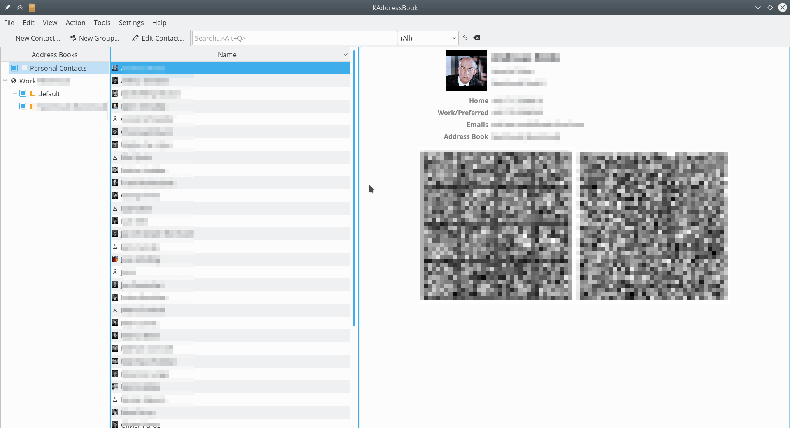
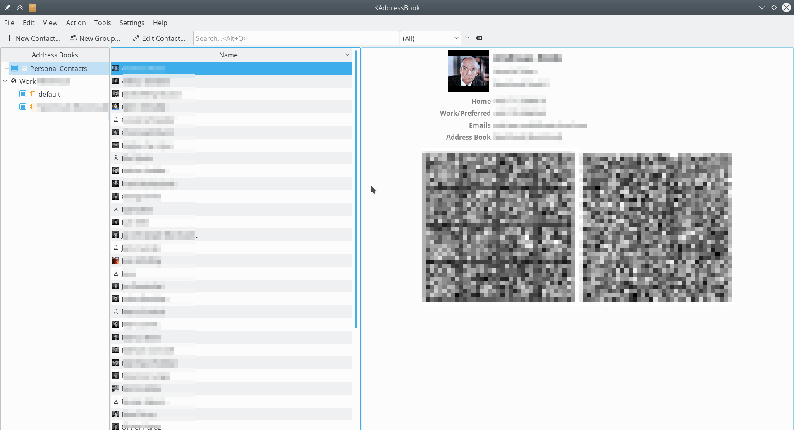

Συγχρονισμός με το KDE Kontact
Το KOrganizer και το KAddressBook μπορούν να συγχρονίσουν το ημερολόγιο, τις επαφές και τις εργασίες σας με έναν διακομιστή Nextcloud.
Αυτό μπορεί να γίνει ακολουθώντας αυτά τα βήματα:
Ανοίξτε το KOrganizer και στη λίστα ημερολογίων (κάτω αριστερά) κάντε δεξί κλικ και επιλέξτε «Προσθήκη ημερολογίου».

Στη λίστα πόρων που προκύπτει, επιλέξτε «DAV groupware resource».

Εισαγάγετε το όνομα χρήστη σας. Ως κωδικός πρόσβασης, πρέπει να δημιουργήσετε έναν κωδικό πρόσβασης / διακριτικό εφαρμογής («Μάθετε περισσότερα <https://docs.nextcloud.com/server/stable/user_manual/session_management.html#managing-devices>» _).
Επιλέξτε «ownCloud» ή «Nextcloud» ως επιλογή διακομιστή Groupware.

Εισαγάγετε τη διεύθυνση URL του διακομιστή Nextcloud και, εάν χρειάζεται, τη διαδρομή εγκατάστασης (οτιδήποτε έρχεται μετά το πρώτο /, για παράδειγμα «mynextcloud» στο «https: // exampe.com / mynextcloud»). Στη συνέχεια κάντε κλικ στο επόμενο.
Τώρα μπορείτε να δοκιμάσετε τη σύνδεση, η οποία μπορεί να πάρει λίγο χρόνο για την αρχική σύνδεση. Εάν δεν λειτουργεί, μπορείτε να επιστρέψετε και να προσπαθήσετε να το διορθώσετε με άλλες ρυθμίσεις.


Επιλέξτε ένα όνομα για αυτόν τον πόρο, για παράδειγμα «Εργασία» ή «Σπίτι». Από προεπιλογή, συγχρονίζονται και τα δύο CalDAV (Ημερολόγιο) και CardDAV (Επαφές).
Σημείωση
You can set a manual refresh rate for your calendar and contacts resources. By default this setting is set to 5 minutes and should be fine for the most use cases. You may want to change this for saving your power or cellular data plan, so that you can update with a right-click on the item in the calendar list and when you create a new appointment it is synced to Nextcloud right away.

Μετά από λίγα δευτερόλεπτα έως λεπτά, ανάλογα με τη σύνδεσή σας στο Διαδίκτυο, θα βρείτε τα ημερολόγια και τις επαφές σας στις εφαρμογές KDE Kontact KOrganizer και KAddressBook!
 
